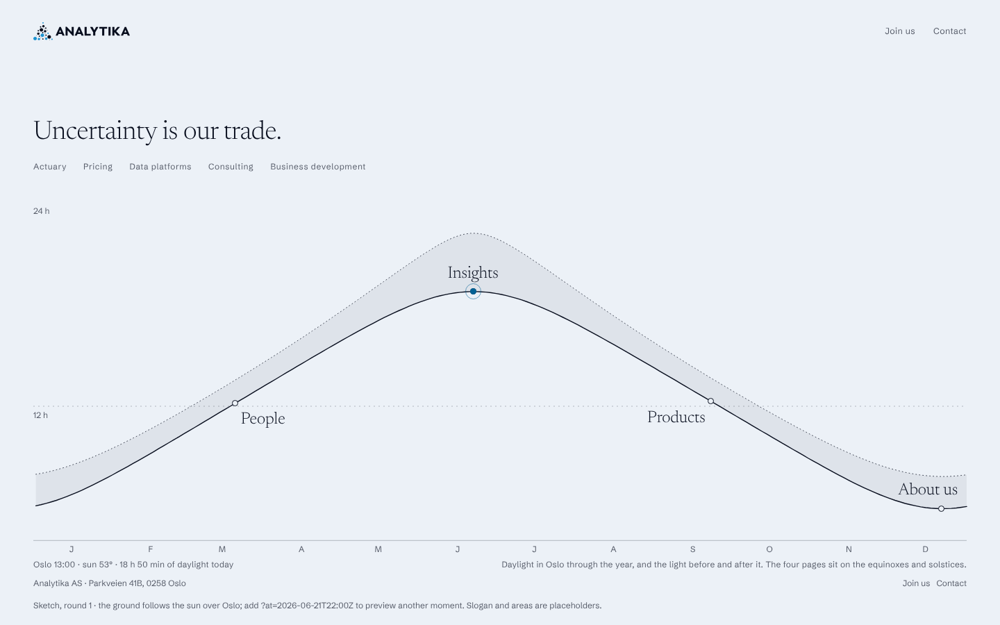
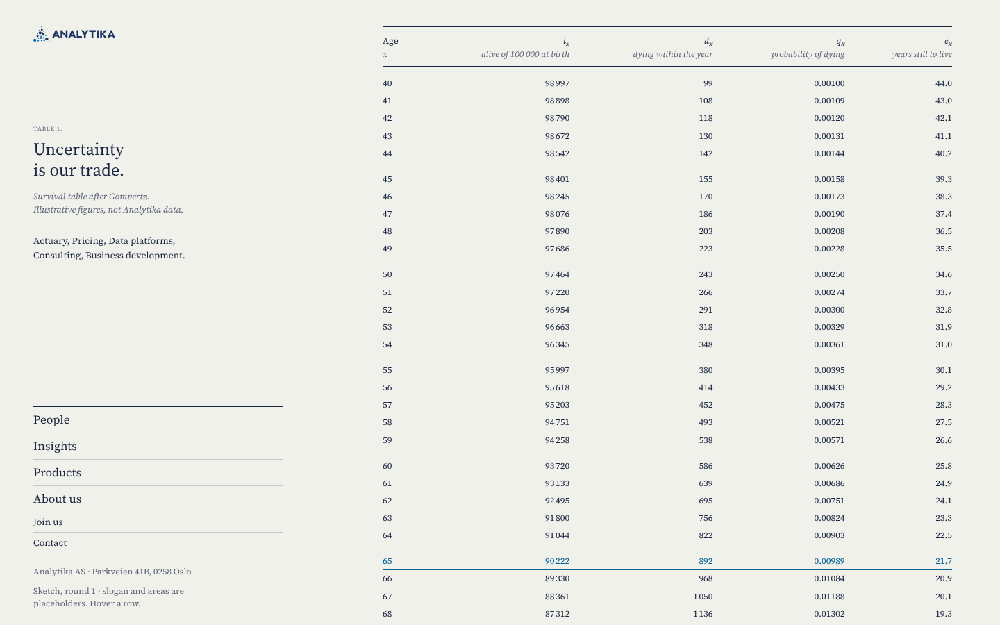
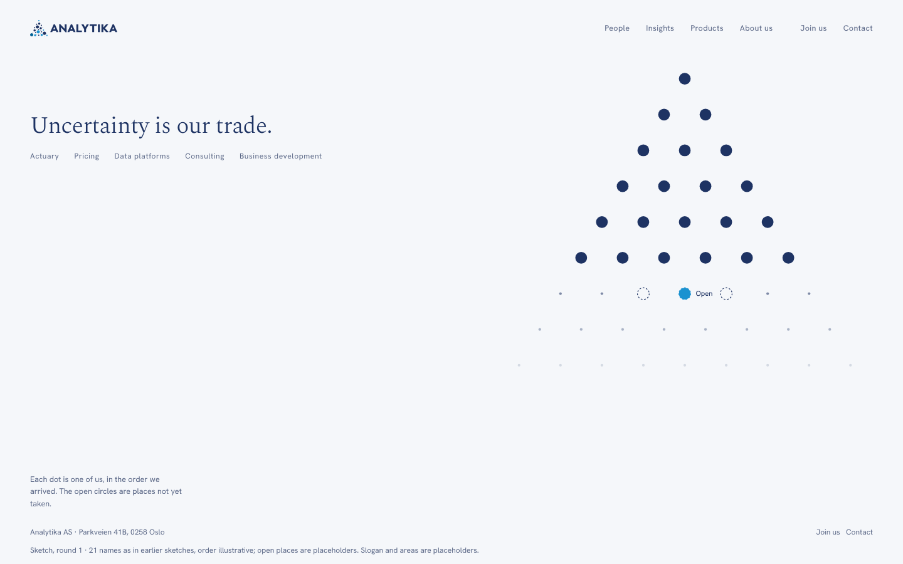
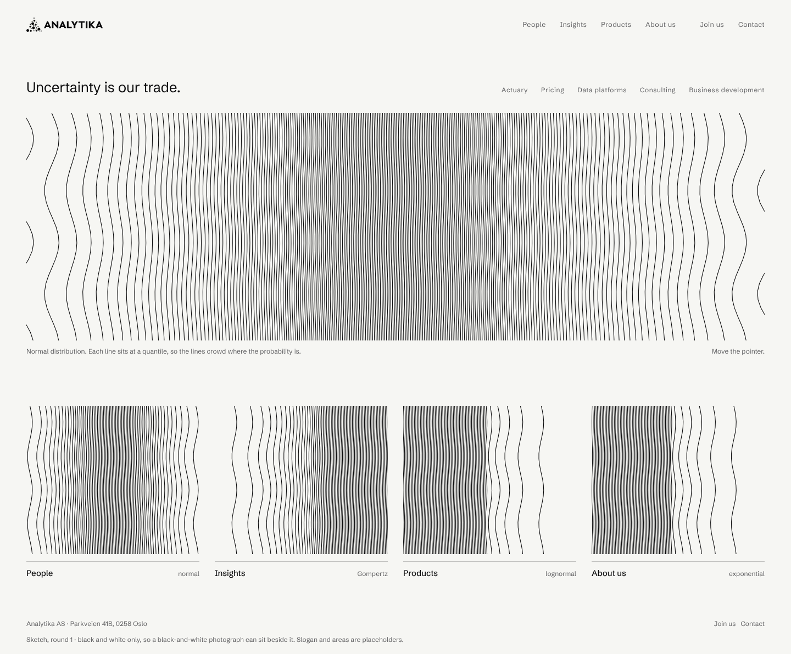

Each opens as a home page with a People page behind it. All copy is placeholder; the 21 names are those used in earlier sketches, and the order of arrival is illustrative.

Oslo-lys
The page is lit by the sky over Oslo right now. One picture: the year’s daylight curve for 59.9° N. The four pages sit on the two equinoxes and two solstices.
Ground follows the real sun elevation, from deep marine at night to pale day. Newsreader and Schibsted Grotesk, small.
Risk: Weak link between daylight and what the firm does. A visitor at 03:00 sees a dark page, at noon a pale one, and our OS dark-mode setting is ignored.

Tabell
The page is a printed actuarial table, set the way a statistical yearbook sets one. Scrolling is growing older. The four pages are the contents.
Paper, navy ink, Source Serif 4 with tabular figures, booktabs rules. One blue row.
Risk: A wall of numbers can read as a spreadsheet to non-actuaries. The figures are illustrative and must stay labelled.

Trekanten
The Galton lattice as the firm. Six rows hold exactly 21 dots, one per person in the order they arrived. The seventh row holds the open places. A ball falls through once and lands on one of them.
Cool white, logo navy and blue only. Spectral light and Hanken Grotesk.
Risk: Tied to the headcount: the shape changes with every arrival, and the home page says “each dot is one of us”, which must stay literally true.

Tetthet
Black and white only. Vertical lines at the quantiles of a distribution, so the lines crowd where the probability is. Four canvases, four real distributions, one per page.
Gallery white, flat black, Schibsted Grotesk. No colour at all except the focus ring.
Risk: Op-art can tire the eye and is the least calm of the four. Needs a reduced-motion path and limits on size.